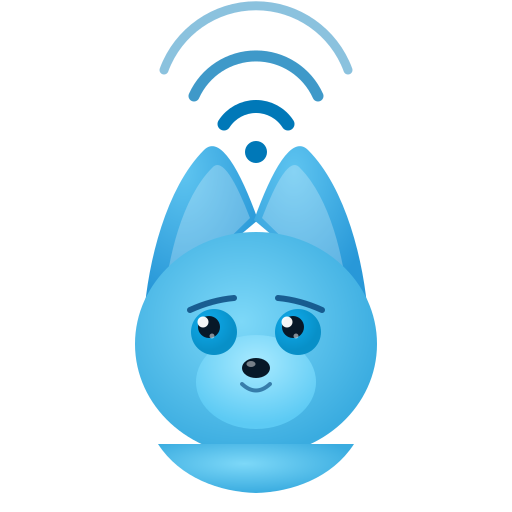

macOS Menu Bar App
Template icon + Liquid Glass popover, 5 states, plus the settings sheet.
Menu bar icon — 22 × 22 template
Template images: monochrome at rest, tinted by state on alert. The system handles wallpaper tinting.
Idle
Outline bolt · template, tints to current menu bar fg. Hit area 22×22.
Warning · 70–89%
Filled amber bolt. Solid, no pulse — calm signal.
Critical · 90%+
Filled red bolt with a subtle pulse ring (2s loop). The only animated state.
Template images render correctly against any wallpaper. Color is supplied via the system, not baked in — state colors only at warning / critical.
Popover — default
360 × 520 pt. Liquid Glass over a real desktop. The hero spec view.
Recent activity
Popover anchors below the bolt with a small specular triangle. Body content is solid (no glass) — only the popover shell is glass, per the rules.
Popover variants
Paired-with-iPhone · Claude Code not detected · Demo mode
Recent activity
Pill replaces the right-side header space. Tap opens iPhone in Handoff.

Couldn’t see Claude Code
The wolf is awake but can’t find the usage hook. We’ll try again in 30s.
No exclamations, no scolding copy. Wolf goes to a “light, unsure” pose with no glow.
Recent activity
Synthetic data tagged demo on every row. Amber pill is the only difference from default — never crit-tinted.
Settings sheet
Modal stacked over the popover. Pairing, alerts, integration, About.
Settings
Paired devices
Alerts
Claude Desktop
About
Sheet uses the same glass recipe as the popover but sits one level above — its highlight merges with the popover’s along the shared right edge.